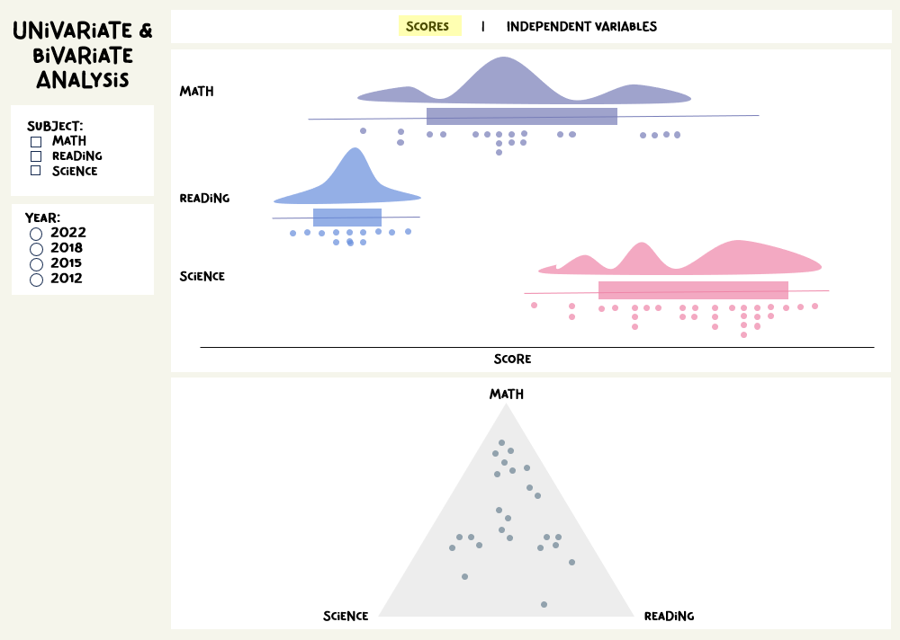
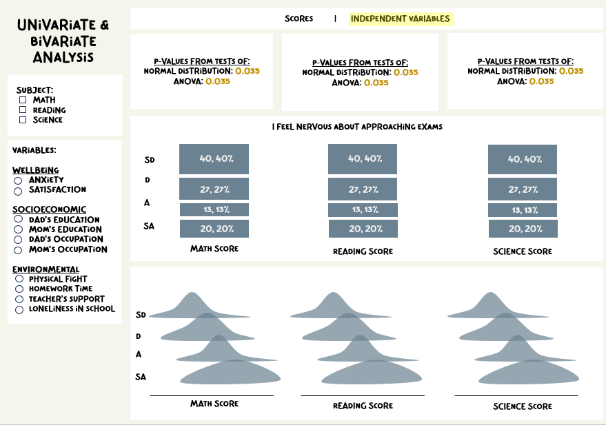
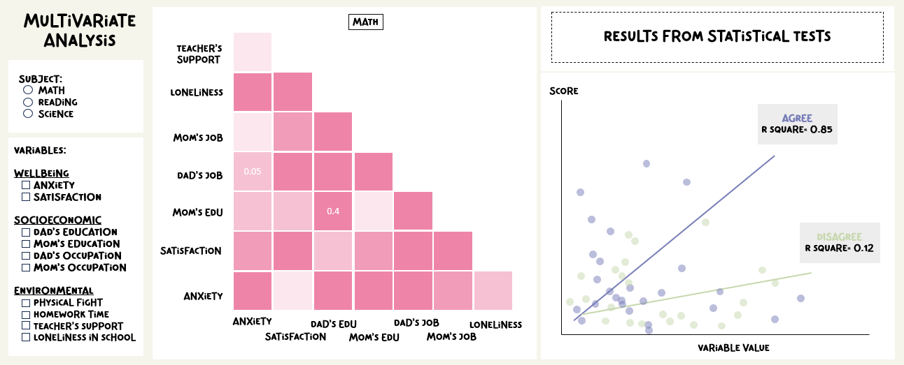
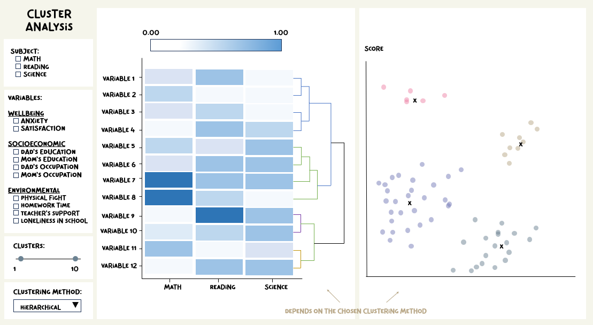

1 Overview & Motivation
Singapore has come a long way since gaining independence in 1965. Without natural resources, human capital development through a well-planned, world-class education system was a critical part of Singapore’s transformation from third world to first. Despite the internationally lauded success, Singapore’s education system is far from perfect – there still exists gaps in education achievement among students. According to the latest OECD’s Programme for International Student Assessment (PISA) 2022, which measures 15-year-olds’ ability to use their reading, mathematics, and science knowledge and skills to meet real-life challenges, socioeconomic status accounted for 17% of the variation in mathematics performance in Singapore (compared to 15% on average across OECD countries). Clearly, Singapore’s success does not translate to success for every student. Why then do some students outperform others? And is socioeconomic status the only factor for success?
Our team believes that knowledge is power. While causality cannot and should not be easily drawn between the various forces of influence and academic performance, a more detailed and nuanced understanding of these factors would highlight potential areas to focus on when engaging parents and students as well as when developing education and socioeconomic policies for a more inclusive and equitable society.
2 Problem Statement
The PISA is treated as a platform for geopolitical competition, as shown by an overemphasis on the comparison of PISA scores between different countries. Scant attention is paid to the extensive data collected through the student, parent, and school questionnaires that are administered alongside the tests, which may reveal more a nuanced understanding of the individual lived experiences of students.
Research studies on the gaps in education attainment in Singapore tends to focus on traditional factors such as gender, race, and socioeconomic status. While these are important structural factors, they should be complemented by individual-level factors, such as psychological wellness, and social relations. Gen Alpha children are said to have reduced attention span, and less time for socialising. These could pose challenges in their education journeys, and deserve closer attention.
Technical knowledge is required to perform accurate and reliable data wrangling and analysis of the survey outcomes from PISA. Such valuable information should be made available to the public in an accessible and interactive manner for self-discovery.
3 Methodology
The team will extract, analyse, and visualise the relationships between different factors and the PISA scores of Singapore students. Using various R packages, an interactive R shiny application with visual analytics techniques will be presented to enable users to interact with the data based on their personal interests and circumstances, and draw their own insights and conclusions regarding the state of learning in Singapore.
Users will be able to:
Compare the PISA scores between different groups of students based on factors such as gender, socioeconomic status (e.g., employment status of parents, immigrant status), and psychological well-being (e.g., feeling of loneliness, resilience when faced with challenges).
Conduct longitudinal comparisons of PISA scores of Singapore students across different years.
Gain an understanding of the varying levels of importance and statistical significance of the various influences on PISA scores for different clusters of students.
Overall, the research hopes to generate new knowledge on disparities in the everyday stress experience and psychological well-being between lower and higher SES students, and their spillover effects on academic performance and persistence. The broader implication of the study is that educational policies must actively address psychological challenges alongside resource challenges to better mitigate socioeconomic gaps in educational attainment.
4 The Data
The PISA Survey measures how well 15-year-old students in different countries perform in the subjects of reading, mathematics, and science. The PISA surveys take place every three years – the latest one was conducted in 2022, after the COVID-19 pandemic. The PISA 2022 database contains the full set of responses from individual students, school principals, teachers, and parents. This project focuses on the student questionnaire data file, retrieved from the PISA Database.
5 Methodology and Analytical Approach
The project will use a combination of Exploratory Data Analysis (EDA) and Confirmatory Data Analysis (CDA) to assess the relationships between academic outcomes and a myriad of factors.
5.1 Exploratory Data Analysis (EDA)
For this project, EDA in the form of visualisation techniques will be applied to give users the ability to obtain evidence-based insights through visual analytics. The availability of a range of psychological, socioeconomic, and environmental factors to choose from under the broad categories of individual, family, and school factors provides a multi-faceted view of academic performance. The inclusion of PISA scores from previous years would allow users to undertake longitudinal analysis of the scores vis-à-vis these various factors.
5.2 Confirmatory Data Analysis (CDA)
For this project, CDA will be three-pronged. One, users can conduct hypothesis testing for the various factors to determine their statistical significance vis-à-vis the PISA scores. Two, users can build a model based on multiple linear regression (and aided by multicollinearity checks) to obtain an integrated perspective of the interplay between different factors on the PISA scores. Three, users can conduct cluster analysis to identify different groups of students based on their scores and related factors.
6 Data Visualisation Methods
There will be 4 sub-modules to display 4 types of analysis, namely: Univariate and Bivairate Analysis, Multivariate Analysis, Cluster Analysis, and Longitudinal Analysis.
6.1 Univariate & Bivariate Analysis
Under this sub-module, we aim to present two tabs. Firstly, to display the distribution of the three subject scores. Secondly, to show the proportion of responses for each independent variable and the distribution of scores according to each category within a variable. Additionally, providing descriptive statistics for each variable could enhance understanding of their individual characteristics.
6.1.1 Target Variables

In the first tab of the first sub-module, we aim to display:
Raincloud plots: To visualise the distribution of individual subject scores (target variables). The raincloud plot serves as a comprehensive visualisation tool by combining three essential components: a density plot, boxplot, and dot plot. The density plot illustrates the distribution’s shape and density, offering insights into its overall pattern. The boxplot provides a summary of central tendency, spread, and any outliers present. Lastly, the dot plot displays individual data points, allowing for a detailed examination of specific values or patterns within the data. Together, these components offer a holistic view of the data distribution.
Ternary plot: By visualising the performance across three different subjects simultaneously for each student, ternary plot enables users to explore the interplay among the subjects, identifying any correlations or dependencies that may exist between them.
Features of this visualisation
Subject Selection Check Box: Users can select which subjects to display, allowing for the visualisation of one subject at a time or multiple subjects simultaneously. This flexibility enables users to focus on specific subjects of interest or compare multiple subjects within the same plot.
Year Selection Option: Users have the option to choose the year of reference for the data displayed. This feature enables temporal analysis, allowing users to track changes or trends in performance over time.
6.1.2 Independent Variables
In this section, we utilise the following visualisations:
Stacked Bar Charts: These charts illustrate the proportion of responses for each independent variable. By stacking the bars, users can visually compare the distribution of responses across different categories within each variable, gaining insights into the relative frequency of each response option while also observing the overall distribution of responses for each variable.
Density Plots: For comparison of the distribution and variability of scores for each categorical values of a variable.
Key Statistics from Confirmatory Data Analysis (e.g., p-values from ANOVA test): These statistics offer additional insights into the relationships between variables and subject scores, providing evidence to support or refute hypotheses and conclusions drawn from the data analysis.
Kindly note that for brevity, the names and number of variables in the prototype below are indicative and non-exhaustive. :)

Features of this visualisation
Subject Selection Check Box: Users can choose which subjects to display, either individually or simultaneously, using checkboxes.
Variable Selection Option: Users have the ability to select variable(s) from the three categories. This feature allows users to focus on specific variables and explore their relationships with subject scores, facilitating targeted analysis and interpretation.
6.2 Multivariate Analysis
Under the Multivariate Analysis sub-module, the following graphs are included:
Correlation Matrix: The correlation matrix provides insights into multicollinearity and correlation coefficients. It displays the pairwise correlations between variables, revealing the strength and direction of relationships between them. By visualising the correlations, users can identify potential multicollinearity issues, where independent variables are highly correlated with each other. This information is crucial for the regression analysis, as multicollinearity can distort coefficient estimates and reduce model accuracy.
Regression Model (Scatter Plot + Regression Line): The user is empowered to construct regression models by assembling a suite of variables to assess their collective correlation with subject scores. Users may choose their own variables or employ stepwise selection (forward, backward, or both). The coefficients associated with each included variable, and various model assessment indicators (e.g., adjusted R-squared value, p-value, residual standard error value) would also be displayed. Users may build two models and compare them against each other to better understand their explanatory capabilities.

Features of this visualisation
Variable Selection Option: Users can customise the analysis by selecting the number and types of variables to test for multicollinearity and for model building. This flexibility allows users to tailor the analysis to their specific research questions or analytical needs. By plotting the correlation matrix and multiple linear regression (MLR) model side-by-side, users can easily identify highly correlated variables and discern which variables have the most significant impact on the results of statistical tests.
Manual or Auto Variable Selection: Users can choose the variables they believe would produce a multiple linear regression model with a good fit (based on their assumptions/impressions of factors that are highly related to scores), or they can choose a stepwise selection approach that is based on the Akaike information criterion (AIC).
Model Comparison: Users may build two different models and compare them with each other. This allows users to choose a model that performs better.
6.3 Cluster Analysis
Under the Cluster Analysis sub-module, users will be able to conduct cluster analysis using either hierarchical or k-means clustering approaches. Users may build two cluster models and compare them against each other based on a variety of validation criteria (e.g., Hubert’s gamme coefficient, Dunn index, corrected rand index).
More specifically, we will utilise the following graphs:
Heatmap: When the user chooses the hierarchical clustering approach, a heatmap is generated to allow the user to visualise the patterns of similarity or dissimilarity between subject scores and the various variables based on the colours gradients displayed. The user can then pick up underlying patterns and associations.
Scatter Plot: When the user chooses the k-means (partitioning) clustering approach, a scatter plot is created to show the different clusters based on subject scores and variables (e.g., high-high, high-low, low-high, low-low quadrants), with clear demarcation by colours between each cluster. This provides an intuitive bird’s-eye view of the clustering outcomes.

Features of this visualisation
Model Comparison: Users may build two different cluster models and compare them with each other. This allows users to choose a model that performs better.
Selection of Number of Clusters: Users will select the number of clusters for the k-means clustering approach.
6.4 Longitudinal Analysis
Under the Longitudinal Analysis sub-module, the following graphs would be shown:
Line Graph: This graph illustrates the trend of change in subject scores over periods of time. By plotting scores against time, users can visualise how performance in each subject evolves over the specified time frame. This visualisation facilitates the identification of trends and fluctuations in scores over time.
Bar Plot: The bar plot displays year-on-year changes to visualise the magnitude of change across time. By comparing scores between consecutive years, users can discern the direction and magnitude of changes in performance. This visualisation helps identify significant shifts or trends in subject scores from one year to the next, providing insights into the pace and direction of change over time.
Features of this visualisation
Subject Selection Option: Users can choose one or multiple subjects for comparison across time. This functionality allows users to focus on specific subjects of interest and explore their trends over the selected time period.
Time Period Selection: Users have the ability to select the time period they would like to visualise. This feature enables users to customize the analysis based on their specific research questions or analytical needs, allowing for exploration of trends and changes over the desired timeframe.
7 R Packages
The R packages we will be using includes:
| Package | Description |
|---|---|
| tidyverse | For data manipulation |
| DT | For interactive data tables |
| ggstatplot | To visual correlation matrix and plots with statistical tests |
| plotly | For interactive, publication-quality plots |
| corrplot | For graphical display of correlation matrix. |
| patchwork | For preparing composite figure created using ggplot2. |
| scales | For data labels and annotations for ggplot2 |
| ggdist | For visualisations of distributions and uncertainty. |
| ggtext | Supports improved text rendering for ggplot2. |
| ggridges | For ridgeline plots that create the impression of a mountain range. They can be useful for visualising changes in distributions over time or space. |
| ggiraph and ggiraphExtra | For dynamic, interactive ggplot2 graphs. |
| heatmaply | For building interactive cluster heatmap. |
8 Project Management
Clear definitions of the project’s objectives, knowledge of its limitations, identification of its risks, team member management, appropriate resource allocation to guarantee that tasks assigned can be completed, appropriate documentation, and regular updates on the project’s status are all necessary components of good project management. In this project, we employ the use of a Gantt Chart to track the timeline and tasks.
Here is an overview of our project timeline: